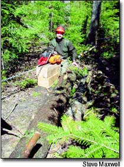
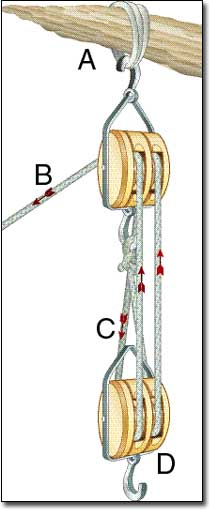
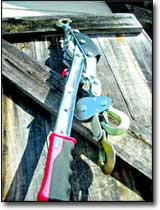

If you haul timber, move boulders, drag or hoist heavy objects or salvage stuck vehicles, then you will want to own some pulling tools. Thanks to the magical mechanical advantages provided by clever combinations of wheels, levers and gears, three small-scale tools - the block and tackle, ratcheting winch and chain saw-powered winch - allow you to move very heavy objects all by yourself. An inexpensive and easy-to-use block and tackle can multiply your personal pulling power by as much as 900 percent!
Here are my three pulling favorites, which I use regularly working my 90-acre property, along with tips for finding and using them yourself.
BLOCK AND TACKLE
If you only have the budget to add one pulling tool to your collection, you should buy a good block and tackle. It's one of those things that has many more uses than you originally imagined, and it can cost as little as $100.
A block and tackle includes a series of pulley wheels called "sheaves" ganged together in one wooden or metal housing called the "block."
I bought my first block and tackle in 1986 to hoist timbers and stone while building my house. It includes two sets of triple-sheave blocks, plus a 250-foot coil of five-eighths-inch braided nylon rope that I keep on a spool and use only for this purpose. Five-eighths-inch diameter rope is a good choice on which to base your pulley block system because it's large enough to grab easily by hand, yet small enough to store easily. It costs about 75 cents per foot.
During the last 15 years, I've used this equipment to lift machinery, building materials and timber frames, and to help direct the fall of large trees away from buildings. The main operating points to understand are the correct matching of rope and block, and how leverage works with changes in the number of pulley sheaves employed. Doubling the number of pulleys allows you to lift twice as much weight, for example.
Single-, double- and triple-sheave blocks are the most common arrangements. By rigging rope back and forth between pulleys in the blocks, you multiply pulling force only as much as you need. Just because you have three pulleys in each block doesn't mean you have to use them all.
RATCHETING WINCH
A block-and-tackle system offers strong, long-range pulling power, but it's also time consuming to set up, take down and store correctly. That's why - for quicker, short-range pulling - a ratcheting winch is more effective. Often called a "come-along," this tool offers serious force multiplication with only a hand lever and cable drum. Some models also include a built-in pulley wheel to double the force generated.
A come-along maintains tension on a steel cable without anyone holding the handle, and when the ratcheting mechanism is engaged, the cable can only get tighter; this is a great advantage if you're working alone. I've used come-alongs to pull timber frame parts together during assembly, to tighten new fencing during installation and to pull cars out of ditches - all by myself.
There are many inexpensive come-alongs on the market that are easy to overload and break; it's important to invest in a good-quality model if you want the tool to be safe and useful for the long term. You'll also find a come-along works much better if you keep the spool of steel cable, the ratchet mechanism and all the pivot points lubed with light oil.
Come-alongs come in various "ton" sizes, based on their pulling power. A 1 1/2-ton version is OK for small loads, but a 3- or 4-ton unit probably will last longer and be more versatile. Expect to pay about $100 for a good 1 1/2-ton model and at least $150 for a 3-ton machine.
CHAIN SAW-POWERED WINCH
Although a tractor is a common choice for moving heavy things, it's not always the best option. Often, a tractor is way more machine than you need for most jobs around a small property, and tractors are expensive to buy, even used, and are costly to maintain.
Rigging a Block and Tackle
There are several ways to rig blocks, but here’s a favorite:
A. Attach one block to an anchor point such as a tree branch.
B. Thread the rope back and forth through the pulleys in each block.
C. Tie the rope to the hook (lug) on the last block in the sequence.
D. Use the hook on the first block in the sequence to anchor it to the item being pulled.
A block-and-tackle system such as this can multiply your pulling force by up to nine times.
If you need tractorlike pulling power in a portable, low-impact, less-expensive package, then the chain saw-powered winch (see photo, Page 58) is worth considering. Unlike the other options I've mentioned, this tool introduces more than just your muscle power into the equation; it links the gas engine from your chain saw with a system of pulleys, gears and cable to give you incredible pulling power.
This little-known pulling tool has a quarter-inch diameter steel cable on a spool and aluminum pulley blocks; the cable is powered by a 50-cubic-centimeter (cc) to 60-cc chain saw engine (with the cutting bar and chain removed) bolted to a high-leverage gearbox. Working together, these parts create excellent pulling power that's completely portable and doesn't leave tracks.
My rig - made by Lewis Winch - generates 4,000 to 8,000 pounds of pulling force, depending on whether it's rigged for a straight pull or in tandem with the aluminum pulley blocks that fit on the cable. That's enough power to pull a fresh-cut 12-inch-diameter, 16-foot-long log through the thickest bush at about 1 foot every two seconds. With a chain saw-powered winch, half-throttle speed is all it takes to haul a fully loaded pickup out of a muddy ditch.
The chain saw winch offers a long-distance reach, too - about 120 feet with a full spool of cable. It's the ideal low-impact logging tool, with a pull as hard as a medium-size tractor. The winch itself costs about $650 and can be powered by a variety of chain saw engines.
I heat my house with wood that I carefully cut from wind-blown, dead and beaver-felled trees, but it wasn't until I invested in a chain saw winch that I was able to make the most of these salvaged forest resources. I pride myself on zero-impact forest use, and that means I never take my tractor into the bush for skidding logs; it's simply too destructive. That said, without some way to pull down trees that snag on others after being cut, too much useful wood remains out of reach.
With a chain saw winch, I can haul logs anywhere within a 120-foot radius of my truck or tractor. And when I'm done, all that's left behind is a small skid mark where the tree traveled over the forest floor on its way out.
CAREFUL PULLING
Unless you're hauling something designed to take a hook, you'll need to take precautions to prevent damaging whatever you're pulling.
This is where nylon lifting straps can help. Available in a variety of widths and lengths, straps spread out the pulling force so the item being pulled doesn't get damaged. Use them when hauling building materials and especially around tree trunks used as anchor points for a chain saw winch. Straps do a terrific job in many applications and often are available in custom lengths from industrial supply outlets. A set of 4-inch-by-12-foot straps costs about $30.
You may not find chain-saw winches or other heavy-duty pulling tools in your favorite hardware stores, but the "Pulling Tool Sources" box below lists several mail-order options.
At first glance, you may think that the worth of good pulling tools is the work you can do with them, but that's only part of their value. When I walk into my tool shed and see nylon ropes hanging neatly next to pulley blocks, or my chain saw winch all ready to go in the job box in the back of my pickup, I have the satisfaction of knowing I can safely and productively handle big jobs by myself. And that, too, is one of the most valuable benefits of the self-sufficient lifestyle.
|
 Rigging a block and tackle |
 A ratcheting winch, or "come-along," offers serious force multiplication with only a hand lever and cable drum. |
 |